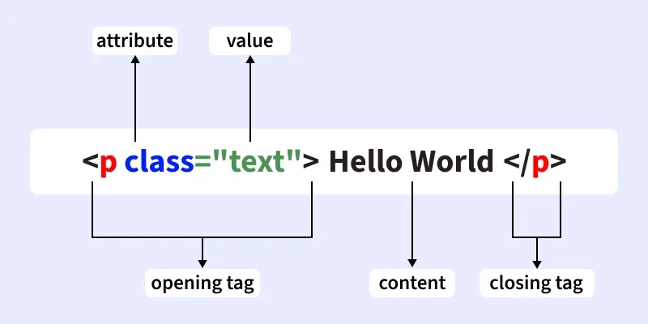
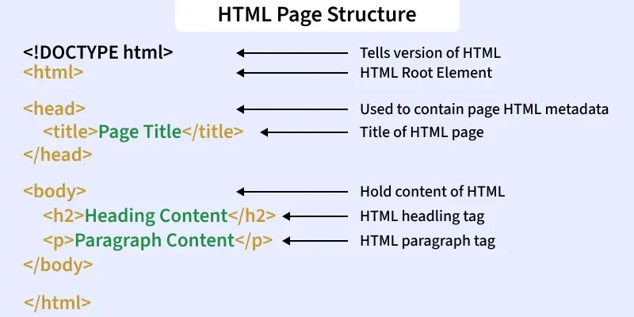

HTML is a markup language whcih annotates the text to define how it is displayed by the web browser.
It contains two basic concepts: elements and tags.


HTML could define the structure and text contents of webpages, but the style modification and dynamic features are done with the support of CSS and JavaScript.
You can easily check the html source file that you are browsing by press "ctrl + u" or right click the page you are viewing and choose "View page source".
We can locate the definition of any elements in the source code and even modify the html files to observe
the changes instantly.
For example, we can easily change the background color of the home page of
Google Chrome.
It's quite fascinating that we actually can easily modify everything that is displayed on our
browser.
So what actually happens when we try to view a certain website?Does it send back the
raw html documents and then our browser displays the corresponed webpages to us?